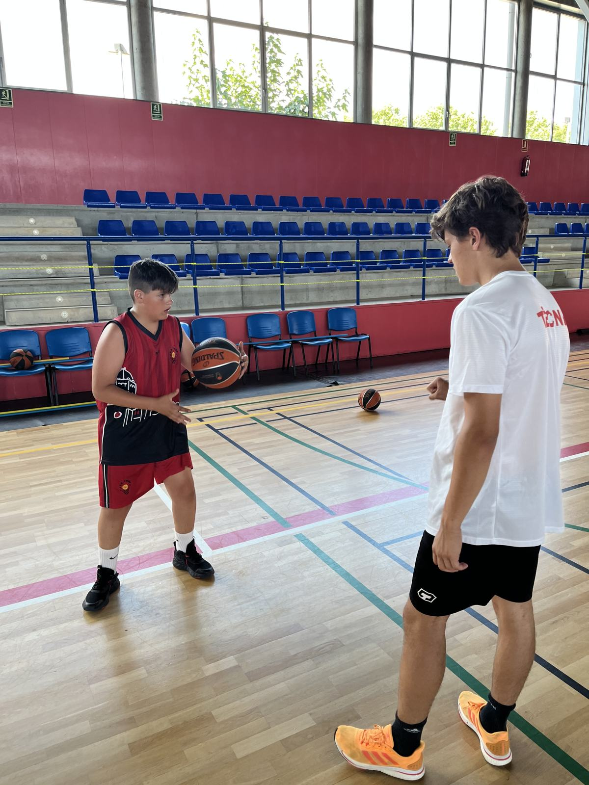

Empezar desde el banquilloStarting from the bench
Vengo del baloncesto. Mientras estudiaba Ciencias de la Actividad Física y del Deporte en la UGR saqué el título de entrenador de Nivel I (2020) y empecé a entrenar en Granada más Baloncesto.I come from basketball. While studying Sport Sciences at the University of Granada I earned my Level I coaching licence (2020) and started coaching at Granada más Baloncesto.
En la temporada 2021-22 fui entrenador y preparador físico del Junior A y del Alevín: los dos equipos quedaron subcampeones de la liga de Granada y se clasificaron para el torneo regional. A la vez coordinaba las escuelas de Sierra Nevada, con sus entrenadores, material e instalaciones, y en marzo de 2022 dirigí a la selección sub-10 de Granada en el Campeonato de Andalucía.In 2021-22 I was head coach and S&C coach of the U18 and U12 teams: both finished runners-up in the Granada league and qualified for the regional tournament. I also coordinated the Sierra Nevada school programme, and in March 2022 I led Granada's U10 team at the Andalusian Championship.
En paralelo llegó la investigación: colaboré en un proyecto nacional sobre asimetrías y en 2021 gané el accésit a investigadores noveles de la SIBB con mi primer trabajo sobre asimetrías en saltos horizontales. Los veranos, campus de Holdat Basketball.Research came alongside: I joined a national project on asymmetries, and in 2021 my first study on horizontal-jump asymmetries won the SIBB young researcher award. Summers meant Holdat Basketball camps.
- 9,19nota media del gradoBSc GPA
- 2equipos subcampeonesrunner-up teams
- SIBBaccésit 2021award 2021

